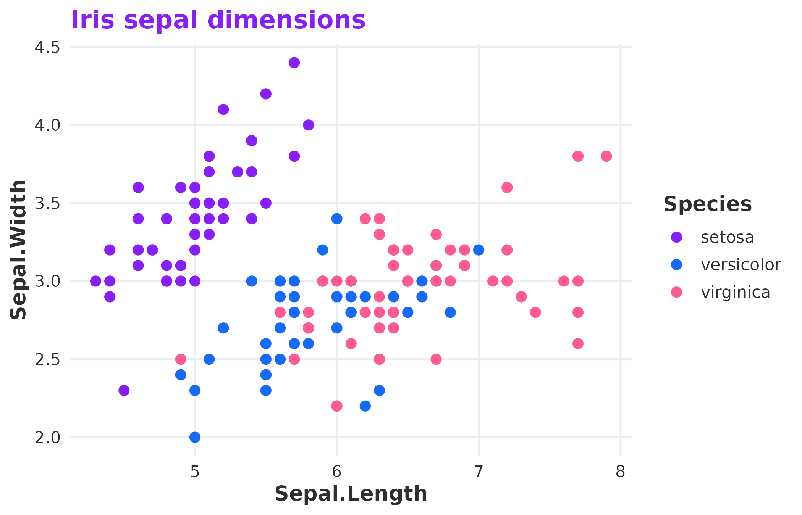
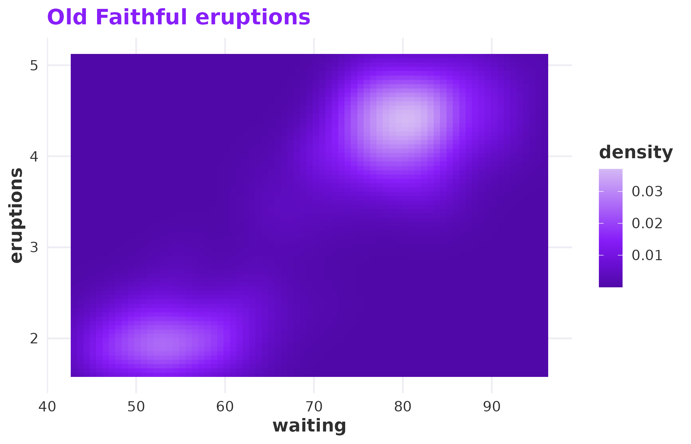
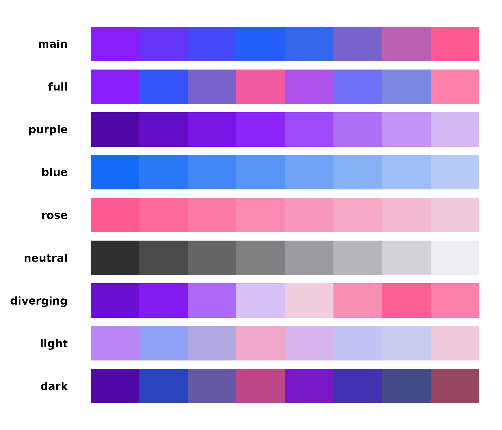
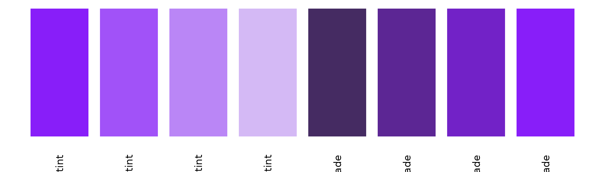
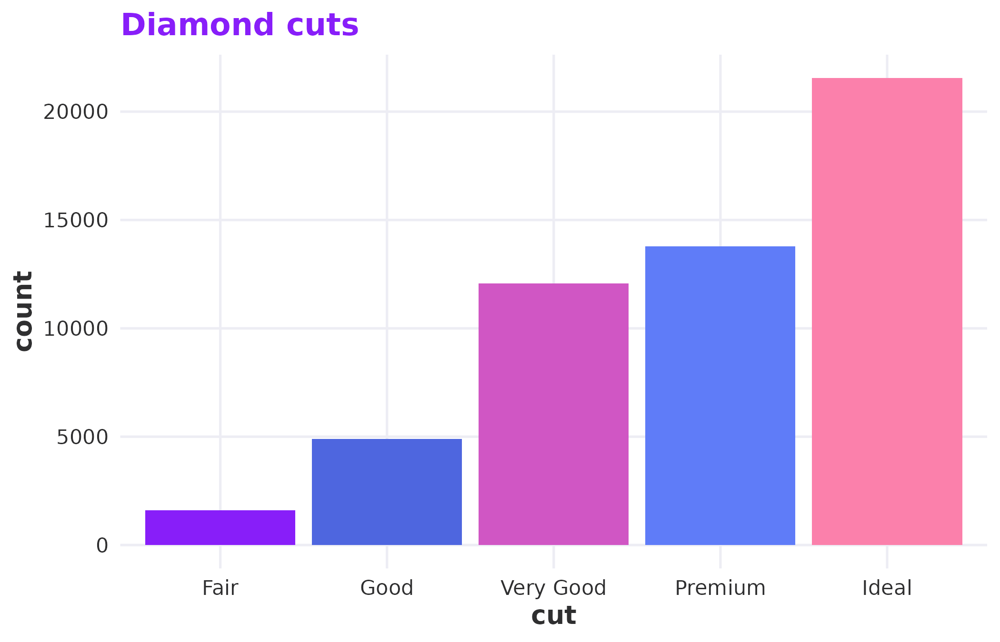
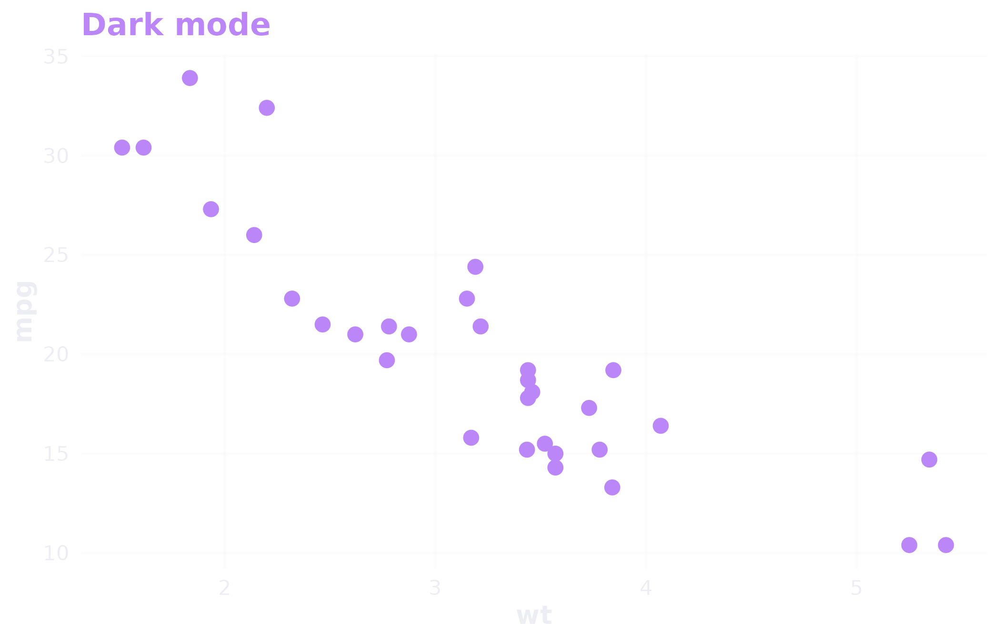
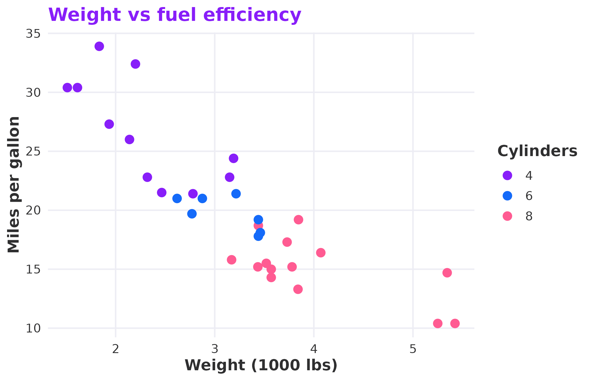

Every R-Ladies chapter makes plots. Meetup announcements, workshop slides, blog posts, annual reports — there is always a chart that needs to look like it belongs. spellbind gives you the RLadies+ colour palette, ggplot2 theme, and colour scales so that everything you produce is on-brand without thinking about hex codes.
The palette
The brand has three primary colours — purple, blue, and rose — plus a
set of neutrals and tints. rladies_cols() is the front
door:
library(spellbind)
rladies_cols("purple", "blue", "rose")
#> purple blue rose
#> "#881ef9" "#146af9" "#ff5b92"Call it with no arguments to see everything:
rladies_cols()
#> purple purple_light purple_50 purple_lighter purple_dark
#> "#881ef9" "#a152f8" "#bb86f7" "#d4b9f5" "#6b0fd4"
#> purple_darker blue blue_75 blue_50 blue_25
#> "#5009a8" "#146af9" "#4a8bf8" "#80acf6" "#b7ccf5"
#> rose rose_75 rose_50 rose_25 charcoal
#> "#ff5b92" "#fb80ab" "#f6a4c3" "#f2c9dc" "#2f2f30"
#> charcoal_75 charcoal_50 charcoal_25 lavender surface
#> "#5f5f61" "#8e8e92" "#bebec3" "#ededf4" "#f8f8fc"
#> surface_alt
#> "#f3f0fa"Colour scales for ggplot2
The scales drop straight into your ggplot2 code.
scale_colour_rladies() and
scale_fill_rladies() handle discrete data; the
_c variants handle continuous.
library(ggplot2)
ggplot(iris, aes(Sepal.Length, Sepal.Width, colour = Species)) +
geom_point(size = 2.5) +
scale_colour_rladies() +
theme_rladies() +
labs(title = "Iris sepal dimensions")
Discrete colour scale applied to species.
For continuous data, pick a single-hue palette like
"purple" or "blue":
ggplot(faithfuld, aes(waiting, eruptions, fill = density)) +
geom_tile() +
scale_fill_rladies_c("purple") +
theme_rladies() +
labs(title = "Old Faithful eruptions")
Continuous fill scale using the purple palette.
Available palettes
Nine palettes ship with the package. Each serves a different purpose:
| Palette | Colours | Use case |
|---|---|---|
main |
purple, blue, rose | Default for categorical data with few groups |
full |
Six brand colours | More groups, still categorical |
purple |
Six purple tints | Sequential or continuous purple data |
blue |
Four blue tints | Sequential or continuous blue data |
rose |
Four rose tints | Sequential or continuous rose data |
neutral |
Charcoal to lavender | Muted backgrounds or secondary data |
diverging |
Purple through lavender to rose | Data with a meaningful midpoint |
light |
Pastel tints (25% mixed with lavender) | Fills behind text on light backgrounds |
dark |
Shaded tints (75% mixed with charcoal) | Categorical data on dark backgrounds |
palette_names <- c(
"main", "full", "purple", "blue",
"rose", "neutral", "diverging", "light", "dark"
)
n <- 8
max_label <- max(strwidth(palette_names, units = "inches", cex = 0.9)) * 1.2
par(mar = c(0.5, max_label * 5 + 1, 0.5, 0.5))
plot(NULL, xlim = c(0, n), ylim = c(0, length(palette_names)),
axes = FALSE, xlab = "", ylab = "")
for (i in seq_along(palette_names)) {
nm <- palette_names[i]
cols <- rladies_pal(nm)(n)
y <- length(palette_names) - i
rect(seq(0, n - 1), y + 0.1, seq(1, n), y + 0.9, col = cols, border = NA)
mtext(nm, side = 2, at = y + 0.5, las = 1, cex = 0.9, font = 2, line = 0.5)
}
All available palettes at a glance.
rladies_pal() returns a function, which is what ggplot2
needs under the hood. You can also use it directly if you need a
specific number of interpolated colours:
rladies_pal("diverging")(7)
#> [1] "#6B0FD4" "#881EF9" "#BB86F7" "#EDEDF4" "#F6A4C3" "#FF5B92" "#FB80AB"Custom tints and shades
All brand tints are created by mixing a colour with lavender (for
tints) or charcoal (for shades) — the same approach as the RLadies+
SCSS. rladies_mix() lets you generate any ratio:
amounts <- seq(0.25, 1, by = 0.25)
tints <- vapply(amounts, function(x) rladies_mix("purple", x, "tint"), character(1))
shades <- vapply(amounts, function(x) rladies_mix("purple", x, "shade"), character(1))
cols <- c(rev(tints), shades)
par(mar = c(2, 0.5, 0.5, 0.5))
barplot(rep(1, length(cols)), col = cols, border = NA, axes = FALSE,
names.arg = c(paste0(rev(amounts) * 100, "% tint"),
paste0(amounts * 100, "% shade")),
las = 2, cex.names = 0.7)
Tints (left) and shades (right) of purple at 25% steps.
The theme
theme_rladies() is a minimal ggplot2 theme built on
theme_minimal(). It uses the brand’s Bastille Black for
text and the purple for titles and strip labels. Backgrounds are
transparent, so plots drop cleanly into slides, documents, and
dashboards without white rectangles fighting the page colour.
ggplot(diamonds, aes(cut, fill = cut)) +
geom_bar(show.legend = FALSE) +
scale_fill_rladies("full") +
theme_rladies() +
labs(title = "Diamond cuts")
The default light theme.
For dark slides or coloured backgrounds, switch to dark mode:
ggplot(mtcars, aes(wt, mpg)) +
geom_point(colour = rladies_cols("purple_50"), size = 3) +
theme_rladies(mode = "dark") +
labs(title = "Dark mode")
Dark mode for coloured or dark slide backgrounds.
Gridlines are on by default. Turn them off with
grid = FALSE when the data speaks for itself.
R Markdown templates
spellbind ships three R Markdown templates you can access from RStudio’s File > New File > R Markdown > From Template menu:
- RLadies+ HTML — a branded html_document with the brand CSS, Poppins font, and purple accents.
- RLadies+ PDF — a branded pdf_document with matching LaTeX headers.
- RLadies+ Xaringan — presentation slides with brand colours and typography.
The HTML and PDF formats are also available as output functions:
These handle the CSS and LaTeX includes for you — just write your content.
Putting it together
A typical chapter meetup workflow looks something like this:
ggplot(mtcars, aes(wt, mpg, colour = factor(cyl))) +
geom_point(size = 3) +
scale_colour_rladies("main") +
theme_rladies() +
labs(
title = "Weight vs fuel efficiency",
x = "Weight (1000 lbs)",
y = "Miles per gallon",
colour = "Cylinders"
)
A complete example combining theme, scales, and brand colours.
The palette, theme, and scales all pull from the same colour definitions. Change nothing, and your plots look like they belong together.